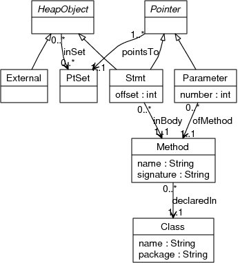

ProBe Points-to Information Data Format
Specification
Schema

Abstract Nodes
Pointer
A Pointer abstract node represents some pointer in the program. A pointer can
either be a method parameter or return value (see Parameter node below),
or the pointer involved in a getfield, putfield, ?aload, ?astore,
invokespecial, invokevirtual, or invokeinterface bytecode instruction
(see Stmt node below).
HeapObject
A HeapObject abstract node is an abstract representation of a set of
objects in the program. A HeapObject abstract node can either be
a Stmt node, which represents all objects allocated in the allocation
bytecode instruction represented by the Stmt node, or the special
External node, representing all objects not allocated by any given
bytecode instructions (see External node below).
Concrete Nodes
Stmt
Each Stmt node represents a bytecode instruction in the program. The
offset attribute is the bytecode offset of the instruction in the method
in which it appears.
A bytecode instruction may represent either a pointer, or a pointer
targer (object). When the bytecode is a getfield or putfield
instruction, it represents the pointer to the object whose field
is being accessed. When the bytecode is one of the ?aload or ?astore
instructions, it represents the pointer to the array whose element
is being accessed. When the bytecode is an invokespecial,
invokevirtual, or invokeinterface instruction, it represents the
pointer to the receiver of the corresponding method call.
When the bytecode is a new, newarray or multianewarray instruction,
it represents the object(s) allocated by that instruction.
Method
Each Method node represents a method in the program. The name attribute
specifies the name of the method. The signature attribute specifies the
parameters and return type (but not the name) of the method in the same
format as they are stored in the a Method Descriptor in the Java class
file format (see The
Java Virtual Machine Specification, section 4.3.3).
Class
Each Class node represents a class in the program. The name attribute
specifies the name of the class, not including the package. For inner
classes, the name is determined as in the Java class file (i.e.
the name may contain $ signs). The package attribute specifies the
package in which the class is defined, with subpackages separated
by a period.
External
A ProBe points-to information graph contains exactly one External
node. This node represents all pointer targets (objects) which are not
allocated at any given allocation site in the Java code. This includes,
for example, objects allocated implicitly by the Java VM, such as a
String storing a command-line argument to the main method.
Parameter
A parameter node represents the pointer that is the parameter of a
method. The number attribute indicates the position of the parameter
in the parameter list of the method, starting with 0 as the first
parameter. The special parameter number -1 indicates the implicit this
parameter of the method. The special parameter number -2 indicates the
return value of the method, rather than a parameter.
PtSet
A PtSet node represents a unique set of pointer targets (objects).
Each PtSet node has outgoing inSet edges to the HeapObject nodes representing
the pointer targets (objects) contained in the set.
Edges
pointsTo
A pointsTo edge from a Pointer node to PtSet node indicates that the
Pointer points to the pointer targets (objects) in the set represented
by the PtSet node.
inBody
Each Stmt node has exactly one inBody edge to the Method node
corresponding to the method in whose body the corresponding bytecode
instruction appears.
declaredIn
Each Method node has exactly one declaredIn edge to the Class node
corresponding to the class in which the method is declared.
ofMethod
Each Parameter node has exactly one ofMethod edge to the Method node
corresponding to the method of which it is a parameter.
inSet
Each PtSet node has outgoing inSet edges to the HeapObject nodes representing
the pointer targets (objects) contained in the set.